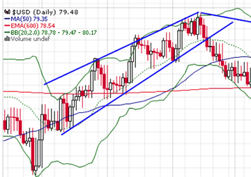

Меню
Меню Основы стратегий
Основы стратегийСтратегии Торговли: Основы
- Основные стратегии торговли бинарными опционами
- Графические стратегии бинарными опционами
- Индикаторные стратегии опционов
- Типы стратегий бинарных опционов
- Шаг 1 - Создание сигналов
- Шаг 2 - Сколько вы должны торговать
- Шаг 3. Улучшение вашей стратегии
- Примеры торговой стратегии
- Торговая стратегия Пример 1 - Торговля трендами
- Торговая стратегия Пример 2. Торговля на новостях
- Торговая стратегия Пример 3 - Использование свечных формаций
- Разработка стратегии бинарных опционов без риска
Как заработать на бинарных опционах? Есть 3 основные группы стратегий, которые используются в работе с бинарными опционами:
Основные стратегии торговли бинарными опционами
В данных методиках составление прогнозов базируется на анализе различных глобальных новостей. В качестве таких влияющих факторов могут выступать различные важные международные экономические или политические события, отчеты крупных корпораций, доклады правительств, заявления первых лиц государств и прочие факторы, влияющие на стоимость активов. Такие факторы могут значительно помочь, если вы все еще ищите способ как заработать на бинарных опционах. Новичку следует ознакомиться в первую очередь.
В торговле различными бинарными опционами анализируются разные такие факты, которые позволяют использовать различные стратегии торговли опционами:
- Нефтяной магнат;
- Торговли по новостям;
- Управления капиталом;
- Торговли по тренду;
- Хеджирования рисков;
- Статистического прогнозирования;
- Два стула;
- Коллар;
- Стренгл;
- Только тренд;
- Мартингейл;
Графические стратегии бинарными опционами
Изучая графики изменения стоимости разных видов активов, специалисты отмечают закономерности периодических изменения различных фигур. Разнообразные графические стратегии строятся на основании графических шаблонов (паттернов). Существуют разные позиции на графиках, которые с очень высокой степенью вероятности могут сигнализировать о ближайших тенденциях изменения стоимости активов.
На основе изучения таких фигур строятся различные графические стратегии:
- Треугольник;
- Буратино;
- Флаг;
- Покупка в диапазоне;
- Голова и Плечи;
- Три индейца;
- Разворот тренда;
- Тройное касание тренда;
- Дно/вершина;
- Клин;
- Железные уровни;
- Безиндикаторная;
- Optimus;
- Маятник;
- Прыжки по тренду;
- Свечные паттерны;
- Вымпел;
- Price Action;
Индикаторные стратегии опционов
Разные виды специализированных индикаторов, которые основаны на заранее рассчитанных алгоритмах, позволяют создавать особые стратегии. О нужном моменте для инвестирования можно получить сигнал, исследуя графики стоимости и отслеживая появление характерных индикаторов.
Сложность использования графических стратегий бинарных опционов состоит в том, что для них очень важно точно настраивать как сами индикаторы, так и графики, что для неопытных трейдеров довольно сложно. Существует масса таких методик:
- Полосы Боллинджера или День-час;
- Прибыльное поглощение или Прорыв и отскок;
- Трендовая или Туннельная;
- Дивергенция по индексу или Три солдата;
- Точный вход или Чинкоу Спан;
- Два стохастика или Высокий прыжок;
- Фантом или Прорыв;
Используя такие разнообразные стратегии, даже начинающие трейдеры смогут хорошо зарабатывать на бинарных опционах.
Типы стратегий бинарных опционов
Стратегии различны, но они имеют три общих элемента:
- Создание сигнала и получение указания, как торговать этим сигналом
- Сколько вы должны торговать
- Улучшение вашей стратегии
Точная стратегия может меняться на каждом шаге, поэтому существует огромное количество возможностей. Важнейшей частью разработки успешной стратегии является понимание как можно больше о каждом элементе. Это будет описано в следующем разделе, начиная с создания сигналов.
Шаг 1 - Создание сигналов
Сигналы являются показателем того, что цена актива приближается к определенному направлению. Конечно, цены на активы постоянно растут. Что вам нужно, так это то, что предсказывает этот шаг, прежде чем это произойдет. Это то, что делает сигнал.
Существует два способа создания сигналов. Первое - использовать новостные события, а второе - использовать технический анализ.
Генерирование сигналов из новостных событий, вероятно, является наиболее распространенным подходом, особенно для новых или неопытных трейдеров бинарных опционов. Это включает в себя просмотр событий, происходящих в новостях, таких как объявление компаний, объявление в отрасли и выпуск правительственных данных по инфляции. Во многих простых случаях позитивные новости означают, что цены, скорее всего, повысятся, а негативные новости могут привести к падению цен.
Отправной точкой для реализации этой стратегии является знание того, какие новостные события следует ожидать и когда. Вот почему вы найдете экономичные календари на самых хороших бинарных опционах торговых платформ. Если вы знаете, что отчет о прибылях компании должен появиться через два дня, вы можете спланировать свой анализ и торговую деятельность вокруг этого.
Лучшие платформы также расскажут вам, чего ожидать от новостного события. Например, полезно знать, что отчет о прибыли компании должен появиться через два дня, но еще более полезно, если вы также знаете, что рынок ожидает увидеть в этом отчете. Затем вы можете принимать решения до отчета, пытаясь предсказать его содержимое и последующие движения рынка. Вы также можете принимать решения после публикации на основе рыночных ожиданий и реакции.
Есть положительные стороны подхода к торговым новостям. В частности, его легко понять и изучить. Есть и недостатки подхода. Самая большая проблема - непредсказуемые рынки. Например, компания может опубликовать отчет о доходах, который показывает увеличение прибыли. Это позитивное новостное событие, которое вы ожидаете в первом чтении, чтобы заставить рынок отреагировать положительно. Однако в отчете может быть дополнительная информация, которая пугает рынок, например, прибыль не столь высока, как ожидалось. Это может означать, что рынок движется меньше, чем вы ожидали, и в некоторых случаях может даже двигаться в неправильном направлении - цены падают, хотя новостное событие классифицируется как позитивное.
Также трудно предсказать, как долго продлится движение и как далеко он продвинется. Если вы вернетесь к примеру отчета о прибыли компании, это позитивный отчет, поэтому цены на акции компании, вероятно, будут расти; Но как долго будет расти цена на рынке и когда будет достигнута максимальная цена? Эти вопросы неизвестны.
Торговля, основанная на техническом анализе, предлагает альтернативу. Это стратегия, которая направлена на прогнозирование движения цен на активы независимо от того, что происходит на более широком рынке.
По сути, этот процесс включает в себя изучение того, как цена конкретного актива перемещалась в прошлом. Исходя из этого, можно установить шаблоны, которые могут быть использованы для прогнозирования движения цен в будущем.
Это звучит сложно, но наши мозги привыкли делать это ежедневно. Хорошим примером является встреча с новым человеком. Если этот человек встретит вас тепло, вы, скорее всего, предскажите позитивные вещи для отношений. С другой стороны, если человек находится в состоянии стеснения или недружелюбен, вы можете ожидать трудностей в отношениях. Вы приходите к этим выводам, основываясь на прошлом опыте общения с людьми и формирования отношений.
Технический анализ делает нечто подобное. Он смотрит на текущие условия актива и решает, основываясь на прошлом опыте, если цена останется в основном неизменной или будет расти или падать.
Как только вы входите в технические понятия и термины, это, конечно, становится немного сложнее. Однако общая концепция такая же, как повседневная задача прогнозирования будущих результатов, основанных на прошлых событиях.
Теперь большой вопрос: должны ли вы использовать подход к новостям в торговле или подход к техническому анализу? Это сводится к нескольким факторам, и ответ будет разным для всех. Лучший совет - попытаться увидеть, с кем вам наиболее комфортно, и который приносит наибольшую прибыль. Конечно, вы, вероятно, не в состоянии тестировать стратегии с помощью своих заработанных с трудом денег. К счастью, есть еще один вариант - использовать демо аккаунт. Каждый в праве выбирать.
Это позволяет торговать бинарными опционами с виртуальными деньгами, а не с реальными. Вы не можете получать прибыль с помощью демо-счета, но вы также не потеряете свои личные средства. То, что вы можете сделать, это проверить стратегии и торговые стили без какого-либо риска.
Один последний момент, который следует помнить при рассмотрении сигналов и стратегий, - это сосредоточиться на краткосрочных сигналах. Существуют инвестиционные стратегии, направленные на прогнозирование движения цены актива в течение длительного периода времени, например 10 лет. Этот тип информации бесполезен при торговле бинарными опционами. Вместо этого вам нужно знать, будет ли цена двигаться в течение следующих нескольких минут, следующего часа, следующего дня. Предсказание цены через 10 лет не актуально.
Для этого вам нужны краткосрочные сигналы и краткосрочные стратегии.
Шаг 2 - Сколько вы должны торговать
Коррекция Фибоначчи - это, по сути, стратегия управления капиталом. Они различаются по сложности и уровню успеха, начиная со стратегии, предусматривающей вложение одной и той же суммы в каждую сделку. Две другие общие стратегии - это система по Мартингейлу и стратегия, основанная на процентах. Для долгосрочного успеха лучше используйте последний вариант.
Вложение одинаковой суммы денег в каждую сделку - это просто отсутствие стратегии вообще. Это самая рискованная стратегия, так как она не учитывает ни общий уровень рентабельности, ни количество денег, которые у вас есть в вашем аккаунте. Оба эти фактора являются важными факторами, и их игнорирование может привести к быстрому исчерпанию остатков.
Давайте посмотрим на две другие общие стратегии сейчас, начиная с управления деньгами по Мартингейлу.
Основная концепция Мартингейл - как можно скорее восстановить потери. Это означает вложение больших сумм денег в торги после проигрышной сделки. Например, у вас может быть установленная стоимость денег, которую вы торгуете, которую вы затем удваиваете, когда у вас есть убыток. Если эта сделка выиграет, вы снова вернетесь к прибыли.
Проблемы с этой стратегией возникают, когда вы продолжаете проигрышную серию с несколькими проигрышными сделками подряд. Каждая проигрышная сделка в Martingale предполагает увеличение инвестиций в следующую сделку. Например, представьте, что вы пошли на проигрышную 10-торговую серию. Это много, но это не нереальная или неразумная ситуация. При проигрыше 10-торговых сделок ваша 11-я сделка должна будет быть в 1,024 раза больше стоимости вашей оригинальной сделки, чтобы остаться в системе по Мартингейл. Не так много трейдеров, которые могли бы выдержать такой подход, даже если стоимость первоначальной сделки была низкой.
Вопрос сводится к тому, насколько точны ваши прогнозы и можно ли предотвратить или свести к минимуму потери. Всегда важно помнить, что в торговле бинарными опционами ничего не стоит на месте. Даже торги, которые, как вы уверены, будут успешными, могут закончиться потерей. Потеря полосы неизбежна, независимо от того, насколько вы хороший трейдер. Просто невозможно быть достаточно правильным, чтобы предотвратить их. Поэтому для большинства людей система управления денежными средствами Мартингейла является рискованным вариантом.
Система с процентной ставкой менее рискованна, поэтому она обычно является предпочтительным выбором для большинства трейдеров, особенно тех, кто не знаком с тематикой. Концепция довольно проста - сумма, вложенная в сделку, основана на балансе вашего счета. Если вы потеряете сделку, баланс вашего счета упадет, поэтому сумма денег, вложенных в следующую сделку, уменьшается. Если, с другой стороны, вы выигрываете сделку, сумма денег, вложенных в следующую сделку, увеличивается, потому что ваш баланс счета увеличился.
Эта стратегия помогает сохранить ваш баланс неповрежденным, чтобы вы могли стабильно получать прибыль с течением времени.
Затем вопрос сводится к тому, какой процент вашего баланса вы хотите инвестировать. В качестве ориентира трейдер, которому комфортно с риском, может выбрать число где-то около пяти процентов, в то время как трейдер, который не любит риск, выбрал бы значение где-то около двух процентов.
Давайте рассмотрим пример, предполагающий, что вы инвестируете пять процентов своего баланса. Если баланс вашего аккаунта составлял 500 долларов США, ваши сделки будут стоить 25 долларов. Если ваш баланс уменьшится до 300 долларов, ваши сделки также уменьшатся - каждая инвестиция составит 15 долларов. Если, с другой стороны, ваш баланс увеличился до 800 долларов, ваши сделки будут составлять по 40 долларов.
Это стратегия, которая поможет вам инвестировать только ту сумму, которую вы можете себе позволить. Это стратегия, которая позволяет вам увеличить свою прибыль, а также защитить свой баланс в течение трудных периодов и потери полос.
Шаг 3. Улучшение вашей стратегии
Один из лучших способов улучшить свою торговую стратегию - проанализировать свою производительность с помощью дневника. Это простая, но очень эффективная концепция. Ведение дневника, где вы записываете каждую сделку, позволит проанализировать все действия и их рентабильность. Затем вы можете искать шаблоны и тенденции, чтобы увидеть, что работает, а что нет.
Это особенно эффективный подход, если вы новый трейдер и все еще пытаетесь установить прибыльную стратегию. Общий подход в этом сценарии заключается в размещении сделок с использованием сигналов технического анализа и сигналов новостей. Дневник поможет вам сохранить эти сделки отдельно, чтобы вы могли судить о том, что лучше. Например, вы можете обнаружить, что вы получаете двойную прибыль от сделок, которые вы делаете на основе технического анализа. Однако по опыту вы знаете, что вы тратите больше времени на сигналы новостных событий, чем на технический анализ. Информация в вашем дневнике указывает на то, что вы должны рассмотреть возможность изменения подхода.
В основном, это все о том, какие профессии работают, а какие нет. Единственный способ сделать это - вести учет, поэтому торговый дневник - это очень эффективный инструмент.
Торговый дневник также позволяет вам сосредоточиться на деталях, чтобы точно настроить свою общую торговую стратегию. В конце концов, вы дойдете до точки, где вы ищете увеличение на одну или две процентных пункта вашей прибыльности. Это просто невозможно сделать устойчивым образом, если вы не будете хранить хорошие записи. С другой стороны, успешное выполнение этой задачи может привести к сотням или даже тысячам дополнительных прибылей.
Не забудьте использовать свой торговый дневник, чтобы проверить все части вашего торгового подхода, а не только торговую стратегию. Это включает в себя то, как вы управляете деньгами и как вы определяете ценность каждой сделки. Это также включает в себя изучение лучших активов для вашего подхода к торговле и стиля.
Затем вы можете углубиться в детали. Например, вы можете посмотреть лучшие дни недели или лучшие времена дня. Эта информация может привести к корректировке вашего подхода. Вы также можете посмотреть на то, какие брокеры работают лучше для вас и многое другое.
Есть много вещей, о которых вам расскажет торговый дневник. Одной из проблем является попытка работать над слишком многими из них в одно и то же время. Если вы это сделаете, вы не узнаете, какие изменения оказывают положительный эффект, а какие нет. Самый простой способ исправить это - сосредоточиться на отдельных изменениях, проанализировать их влияние и затем двигаться дальше. Опять же, ваш торговый дневник имеет решающее значение для этого процесса.
Если вы в настоящее время не ведете торговый дневник, начните как можно скорее. Он станет незаменимым инструментом.
Примеры торговой стратегии
Давайте теперь более подробно рассмотрим некоторые конкретные торговые стратегии. Приведенные ниже стратегии относятся к числу наиболее распространенных, но есть и другие, которые вы можете использовать. Кроме того, многие трейдеры адаптируют, изменяют или сочетают стратегии в соответствии со своими целями, отношением к риску и целями торговли. Там должна быть отправная точка, и приведенные ниже стратегии являются хорошим местом, чтобы начать изучение стратегий торговли бинарными опционами.
Прежде чем продолжить, важно помнить, что ни один из них не будет эффективен, если вы также не сочетаете их со стратегией управления капиталом и улучшения, как описано выше.
Торговая стратегия Пример 1 - Торговля трендами
Как бинарные опционы изменили мою жизнь и вывели меня из долгов. Цена актива обычно движется в соответствии с трендом, то есть он движется вверх по цене в течение определенного периода времени или движется вниз по цене. Эти ценовые движения никогда не линейны. Вместо этого они совершают зигзаги, иногда поднимаясь в цене, а иногда и снижаются, но в целом движутся в одном общем направлении. Поскольку эти зигзагообразные движения предсказуемы в определенных ситуациях, они предоставляют возможность для торговли.
Проще говоря, у вас есть два основных варианта: вы можете торговать общей тенденцией или вы можете торговать каждым колебанием. Торги общим трендом означают игнорирование поминутных движений цены вверх и вниз, чтобы вместо этого сосредоточиться на общем направлении тренда на определенный период времени. Это дает вам многочисленные возможности для получения прибыли от тренда, особенно учитывая тот факт, что большинство тенденций сохраняются в течение средних и длительных периодов времени, то есть они находятся в границах краткосрочного стиля торговли, необходимого для успешной торговли бинарными опционами.
Торговля каждым колебанием предполагает размещение большего количества сделок. В результате это приводит к большему риску, но есть также потенциал для большего вознаграждения. Этот подход основан на размышлениях о максимумах и минимумах как в восходящем, так и в нисходящем тренде:
Восходящий тренд - Новые максимумы и новые минимумы, как правило, будут выше предыдущих максимумов и минимумов в восходящем тренде.
Тенденция к понижению - новые максимумы и новые минимумы, как правило, будут ниже предыдущих максимумов и минимумов в нисходящем тренде.
Помните о том, что было сделано в начале этого раздела - нет причин, по которым вы не можете комбинировать их, чтобы одновременно использовать оба подхода. Они не являются взаимоисключающими.
Самый распространенный способ торговли трендами - использование опций High / Low. Все бинарные опционные торговые платформы предлагают этот тип торговли. В основном, вы торгуете, будет ли цена актива выше, чем сейчас, после определенного периода времени (высокая опция) или ниже, чем сейчас (низкий вариант).
Более рискованный, но потенциально более выгодный вариант - это использовать опцию «одним касанием». Это еще один популярный выбор бинарных опционов. Вместо того, чтобы просто предсказать, закончится ли цена выше или ниже, вы прогнозируете, достигнет ли цена определенного значения. Это называется целевой ценой.
Опять же, вы можете использовать комбинацию обоих способов, чтобы разнообразить свой риск, увеличивая при этом вероятность получения более высокой прибыли.
Торговая стратегия Пример 2. Торговля на новостях
Стратегии торговли бинарными опционами Трейдинг на активы, основанный на событиях в новостях, является одним из наиболее популярных способов торговли. Теория довольно проста. Хорошие новости, такие как информация о прибылях компании, выше ожиданий аналитиков, означают, что цена этого актива будет расти. Аналогичным образом, информация о прибылях, которая была разочаровывающей, означала бы снижение котировок акций компании. В этих условиях вы можете совершать выгодные бинарные опционы.
Однако это не точная наука. Другие стили торговли, такие как технический анализ, дают точные параметры. Торговля на новостных событиях оставляет много шансов, так как нет уверенного способа узнать, насколько цена актива будет расти или уменьшаться, или как долго будет движение цены.
Вы можете принять конкретные стратегии и подходы, чтобы повысить ваши шансы на успех. Вот три из них, которые вы можете использовать в своей общей стратегии бинарных опционов:
- Граничные варианты - это стратегия, которую нужно использовать, когда вы знаете, что цена актива будет двигаться, но вы не уверены, в каком направлении она пойдет. Хорошим примером ситуации, когда это подходит, является крупное новостное событие, так как вы не будете знать, будет ли это позитивная новость или негативная новость. С опцией границы определяются две целевые цены - одна выше текущей цены и одна ниже. Разница между этими двумя числами называется ценовым каналом. Если цена актива достигает любой из этих двух целевых цен, вы выигрываете. Если он остается в канале, вы проигрываете. Как вы можете видеть, это стратегия, которая лучше всего работает, когда вы ожидаете значительного изменения цены актива.
- Торговля прорывом - прорыв - это период времени, непосредственно следующий за выпуском новостей, влияющих на рынок. В торговле бинарными опционами это очень короткий период времени - от 30 секунд до нескольких минут. Теория, лежащая в основе стратегии, заключается в том, что наиболее существенные изменения цены актива будут происходить в течение этого периода прорыва, поскольку трейдеры стремятся скорректировать свои позиции, чтобы получать прибыль или ограничивать их подверженность риску. Тип бинарных опционов, которые вы будете использовать в этом сценарии, - это простой вариант High / Low, но вы выбираете очень короткий срок действия. Это иногда называют 60-секундным вариантом.
- Интеллектуальные сделки с высоким / низким уровнем. Простыми словами позитивные новости означают, что цены будут расти, а негативная новость означает, что цены упадут. Как уже объяснялось, рынок не всегда реагирует в соответствии с этим правилом. Иногда новость, которая позитивна на поверхности - падение показателей безработицы, отчеты о прибылях компании или цифры инфляции, которые находятся в пределах правительственных целей, например, - заставляют рынки реагировать отрицательно. Это сводится к ожиданию, т. Е. Рынок ожидает, что показатели безработицы, объявления прибыли или инфляции окажутся лучше и уже внесли корректировки до того, как новость была выпущена в ожидании. Когда новость не так хороша, как ожидает рынок, она корректируется в другом направлении, что приводит к падению цен, даже несмотря на то, что новости в целом позитивны. Если вы можете предсказать, когда эти события произойдут, вы сможете получать хорошую прибыль с помощью сделок с высоким / низким уровнем.
Торговая стратегия Пример 3 - Использование свечных формаций
Инструменты для торговли бинарными опционами. Для новых трейдеров это может быть самая трудная из объясняемых стратегий, но это самый простой способ реализовать и заработать деньги, как только вы это поймете.
Когда вы смотрите на ценовую диаграмму актива с течением времени, это типичная линейная диаграмма, показывающая цену в каждый момент времени. Например, если посмотреть на цену за месяц, скорее всего, вы покажете цену закрытия актива в каждый день. Однако это только одна часть данных о ценах. Подсвечники дают вам гораздо больше.
Подсвечники представлены на диаграмме активов с течением времени, как линейный график, но они предназначены для предоставления вам гораздо больше информации. Нижняя часть подсвечника представляет собой низкую цену, которую он достиг в течение определенного периода времени, а верхняя часть подсвечника представляет высокую цену, которую он достиг. Между ними вы также увидите цену открытия и закрытия. Другими словами, подсвечник позволяет вам увидеть, на первый взгляд, диапазон цен, с которым колебался конкретный актив в течение этого определенного периода времени.
Использование подсвечников в качестве торговой стратегии предполагает распознавание различных свечных формаций, которые вы можете использовать для прогнозирования движения цены актива.
Одним из примеров является подсвечник с пробелом. Это происходит, когда цена актива переходит от одной цены к другой, которая значительно выше или ниже. Разница между этими ценами - это разрыв. Это необычное явление, поскольку ценовые движения, как правило, гораздо более постепенны, при этом актив попадает во все или большую часть ценовых точек по мере продвижения по диапазону.
Итак, что вы можете узнать об активах, когда обнаружите разрыв в подсвечнике, и как вы можете использовать эту информацию для предсказания?
- Промежуток, который возникает во время отсутствия большого объема торгов, может быть индикатором того, что скорее всего произойдет быстрая коррекция. Одна из ситуаций, когда это может произойти, незадолго до закрытия рынка в тот день, когда осталось не так много трейдеров. Крупные сделки в этих ситуациях могут создать разрыв, но это необязательно отражает силу актива, т. Е. Если бы сделка имела место, когда рынок был более активным, разрыв не имел бы места. Поэтому вы можете прогнозировать разрыв в цене этого актива и соответственно основывать свои сделки.
- Промежутки, возникающие в периоды высокой торговой активности, но когда цена обычно не движется очень, могут быть индикатором нового прорыва, т. Е. Цена актива начнет двигаться в этом направлении. Вы можете использовать эту информацию для прогнозирования цены и совершения сделки.
- Если в определенном направлении уже есть тренд и объем торгов нормальный, разрыв может указывать на ускорение тренда. Другими словами, движение цены в определенном направлении, скорее всего, ускорится. Вы можете использовать эту информацию, чтобы основывать свою следующую сделку.
Формирование свечи с разрывом является лишь одним из многих. Однако знание и уверенность в нескольких из них значительно улучшат вашу стратегию бинарных опционов.
Разработка стратегии бинарных опционов без риска
Как подробно объясняется в этой статье, стратегия бинарных опций необходима, если вы хотите выгодно торговать. Это дает структуру вашей торговле, снимает эмоции под руководством принятия решений, и позволяет анализировать и совершенствовать.
Как вы проверяете стратегию, не рискуя своими деньгами? В конце концов, как вы можете узнать, что стратегия не работает без тестирования? Если вы попробуете стратегию, которая не работает, используя ваши собственные деньги, вы потеряете ее. Это может привести к тому, что вы перейдете к имеющимся у вас средствам до окончания фазы тестирования, в результате чего вам нечем будет торговать.
Есть решение - демонстрационный счет бинарных опционов. Все авторитетные и качественные брокеры и торговые платформы предлагают демонстрационные счета. Они позволяют протестировать платформу, но, что еще важнее, они также позволяют тестировать свои торговые стратегии с использованием реальных рыночных условий. Тестирование проводится с использованием виртуальных денег вместо ваших собственных, поэтому нет реальных денег под угрозой. Конечно, вы тоже не можете заработать, но дело не в этом. Суть демо-счета - укрепить выгодную стратегию бинарных опционов.